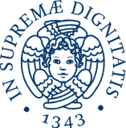

- 6+
- anni in NRG PALLAS
- 6
- articoli ASME PVP
- 8
- conferenze internazionali
- 4
- lingue
Informazioni
Sono un Ingegnere Nucleare e lavoro come Consulente nel gruppo Asset Integrity Engineering di NRG PALLAS, a Petten. Mi occupo di integrità strutturale: meccanica della frattura, analisi termo-meccaniche agli elementi finiti, analisi strutturali statiche, simulazioni di caduta, verifiche sismiche e controlli di qualità.
Coordino i progetti di ricerca su Pressurized Thermal Shock e Leak Before Break, e dal 2023 al 2025 ho fatto parte del panel che sviluppa la procedura britannica R6 per la valutazione dei difetti. Ho una formazione in ingegneria aerospaziale e nucleare: ho studiato all'Università di Pisa e all'Istituto di eccellenza Sant'Anna, con un periodo di ricerca al Jet Propulsion Laboratory della NASA.
Esperienza
-
NRG
PALLASNuclear Engineer Consultant
NRG PALLAS · Tempo pieno
lug 2020 — oggi · Petten, Paesi Bassi
Consulenza e servizi nel gruppo Asset Integrity Engineering.
- Meccanica della frattura, analisi termo-meccaniche FEM, analisi strutturali statiche, simulazioni di drop test, valutazioni sismiche e QA.
- Responsabile dei progetti di ricerca su Pressurized Thermal Shock e Leak Before Break.
- Sviluppo di una web app a supporto del Long Term Operation oltre i 60 anni (LTO over 60), in Python, Django e SQL.
- Meccanica della frattura
- FEM
- ANSYS MAPDL
- LS-DYNA
- Leak Before Break
- Pressurized Thermal Shock
-
Panel Member
R6 · gruppo di sviluppo della procedura britannica per la valutazione dei difetti
2023 — 2025 · 2 anni
Membro del panel che sviluppa R6, la procedura per valutare l'integrità delle strutture con difetti.
-
NRG
Student Intern
NRG · Nuclear Research and Consultancy Group (oggi NRG PALLAS)
set 2019 — mar 2020 · Petten, Paesi Bassi
Analisi probabilistica Leak Before Break.
-
Visiting Researcher
NASA Jet Propulsion Laboratory
ago 2015 — ott 2015 · Pasadena, California
Studio preliminare della dinamica di un sistema di propulsione senza propellente nel campo magnetico di Giove.
Formazione
-

Università di Pisa
Laurea magistrale in Ingegneria Nucleare
2017 — 2020 · Voto 105/110
-
Università di Pisa
Laurea triennale in Ingegneria Aerospaziale
2012 — 2017 · Voto 104/110
-
Scuola Superiore Sant'Anna
Allievo Ordinario
2012 — 2016 · Pisa
Borsa di studio completa vinta con concorso nazionale, con il 3% di ammessi.
Corsi e certificazioni
- 2026API 579Becht · training
- 2025ASME B31-FFSBecht · training
- 2025European Master of Science in Nuclear Engineering (EMSNE) CertificateEuropean Nuclear Education Network (ENEN) · riferito alla laurea magistrale del 2020
- 2025Effective CommunicationICM opleidingen & trainingen
- 2023An Introduction to ASME Section VIII, Division 2, Part 5: Design By AnalysisASME Pressure Vessels & Piping Division · tutorial tecnico a PVP 2023
- 2022Fracture Mechanics Applications for PipingASME Pressure Vessels & Piping Division · tutorial tecnico a PVP 2022
- 2022Consultative Selling for Technology ProfessionalsHigh Tech Institute & Settels Savenije Friedrich
- 2019NARSIS Workshop: Training on Probabilistic Safety Assessment for Nuclear FacilitiesWarsaw University of Technology · con il sostegno di ENEN
Conferenze
- 2025Advancements in Modeling of Pressurized Thermal Shock Analysis in Reactor Pressure VesselsF. P. Ricci, F. Pasti, F. BriganteArticolo · ASME Pressure Vessels & Piping Conference · PVP2025-154629
- 2024Leakage Rate Models for Cracked PipesF. Brigante, F. Pasti, F. H. E. de Haan-de WildeArticolo · ASME Pressure Vessels & Piping Conference, Bellevue · PVP2024-123358
- 2024Sensitivity Analysis of Thermo-mechanical Models for Irradiation ExperimentsRelatoreSMiRT 27 · Structural Mechanics in Reactor Technology, Yokohama
- 2023Probabilistic Leak Before BreakF. Brigante, F. Pasti, F. H. E. de Haan-de WildeArticolo · ASME Pressure Vessels & Piping Conference, Atlanta · PVP2023-105920
- 2023Comprehensive Modelling of Pressurized Thermal Shock With a Probabilistic ApproachF. Pasti, S. Tajfirooz, H. J. Uitslag-Doolaard, F. Brigante, F. H. E. de Haan-de WildeArticolo · ASME Pressure Vessels & Piping Conference, Atlanta · PVP2023-105923
- 2021–23RRFM · European Research Reactor ConferenceRelatore · Leak Before Break e analisi di sensitivitàEuropean Nuclear Society · Helsinki 2021, Budapest 2022, Anversa 2023
- 2022Probabilistic Modular Tool to Assess Leak Before Break in PipesF. Brigante, C. Versteylen, F. H. E. de Haan-de WildeArticolo · ASME Pressure Vessels & Piping Conference, Las Vegas · PVP2022-84226
- 2022Towards a Probabilistic Analysis of Pressurized Thermal ShockC. D. Versteylen, N. B. Siccama, H. J. Uitslag-Doolaard, F. Brigante, E. Pallaoro, F. H. E. de Haan-de WildeArticolo · ASME Pressure Vessels & Piping Conference, Las Vegas · PVP2022-84287
- 2021ATLAS+ modelling of LbB aspects to assess influence of real safety factorsRelatore invitatoFESI · seminario Latest Developments in Leak-Before-Break, online
Competenze
Integrità strutturale
- Meccanica della frattura
- Analisi termo-meccanica FEM
- Analisi strutturali statiche
- Leak Before Break
- Pressurized Thermal Shock
- Meccanica della frattura probabilistica
- Verifiche sismiche
- Simulazioni di drop test
Codici e norme
- ASME BPVC Section III
- ASME BPVC Section VIII
- EN 1993 · Eurocode 3
- API 579-1/ASME FFS-1
- BS 7910
- KTA 3206 · Leak Before Break
- ASME B31-FFS
- R6
Software
- ANSYS MAPDL
- LS-DYNA
- SpaceClaim
- CATIA
- FreeCAD
- Ultimaker Cura
- MATLAB
- Mathematica
- Python
- Django
- SQL
- R-code (EDF)
- Rap++
- LaTeX
- Linux
Lingue
- ItalianoMadrelingua
- IngleseC1 · professionale completa
- FranceseA2 · elementare
- OlandeseA2 · elementare
Attività e riconoscimenti
- 2020Rappresentante degli studenti, Scuola di IngegneriaUniversità di Pisa · membro del consiglio della Scuola
- 2018–20Rappresentante degli studenti, laurea magistrale in Ingegneria NucleareUniversità di Pisa · membro del consiglio di corso
- 2018Fondatore dell'associazione Studenti Ingegneria Nucleare PisaVisite universitarie a centrali e centri di ricerca europei, e divulgazione delle tecnologie nucleari
- 2011Olimpiadi della Fisica, finale nazionale individualeSenigallia · selezionato per la scuola estiva nazionale di fisica
Hobby
- Programmazione
- LLM in locale
- Self-hosting
- Reti e amministrazione di sistemi
- Elettronica hobbistica
- Nuoto
- Storie di fantascienza
- Giochi da tavolo